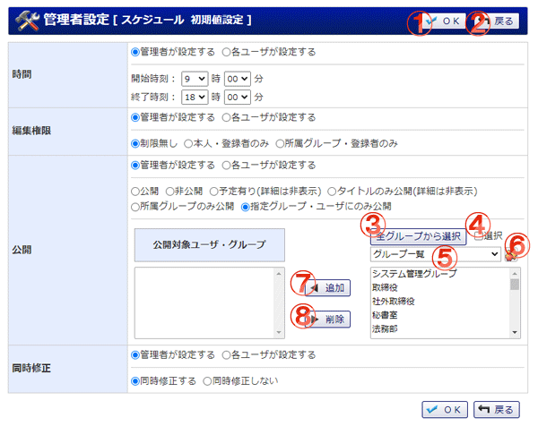

スケジュール登録の初期値設定を行う画面です。

機能説明
OKボタン確認画面へ遷移します。 |
戻るボタン遷移元の画面へ遷移します。 |
|---|---|
全グループから選択ボタンポップアップで全グループから選択画面が開きます。 |
選択チェックボックス右側のリスト一覧に表示されている項目を全て選択状態にします。 |
グループコンボ選択したグループに所属するユーザがユーザリストに表示されます（既にユーザリストに追加されているユーザは表示されません）。 |
グループボタンポップアップでグループ選択画面が開きます。 |
追加ボタンユーザリストで選択されているユーザ(グループ)を、対象ユーザリストに追加します。 |
削除ボタン対象ユーザリストで選択されているユーザ(グループ)を、対象ユーザリストから除外します。 |
表示・入力項目説明
編集権限
管理者で一括強制にするか各ユーザで設定するか選択し、スケジュール登録時の編集権限の初期値を設定する。
公開
管理者で一括強制にするか各ユーザで設定するか選択し、スケジュール登録時の公開の初期値を設定する。
また公開区分が指定ユーザ・グループのみの場合は対象ユーザリストを選択します。
同時修正
管理者で一括強制にするか各ユーザで設定するか選択し、
同時登録されたスケジュールを編集する際の同時修正の初期値を設定する。